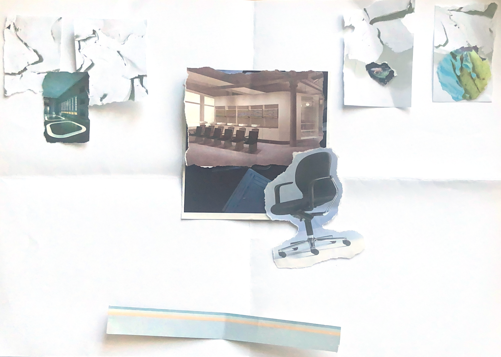
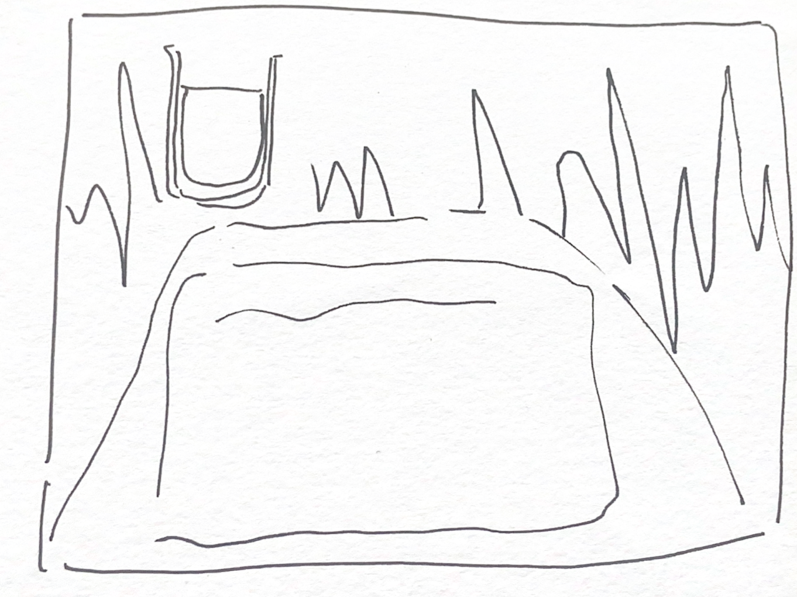
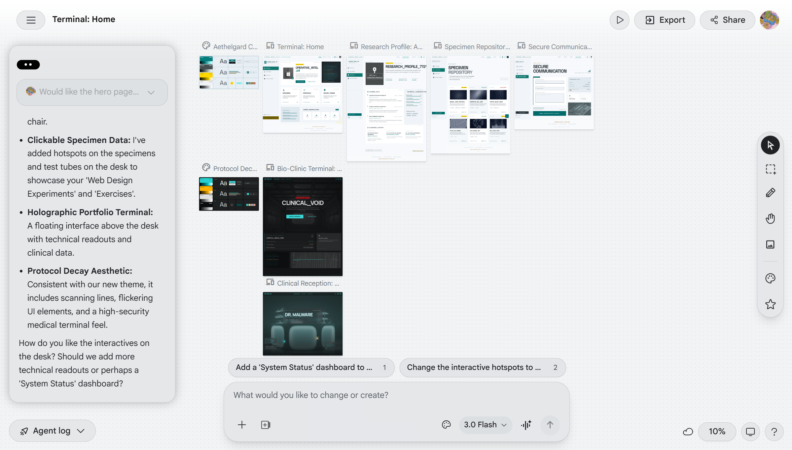
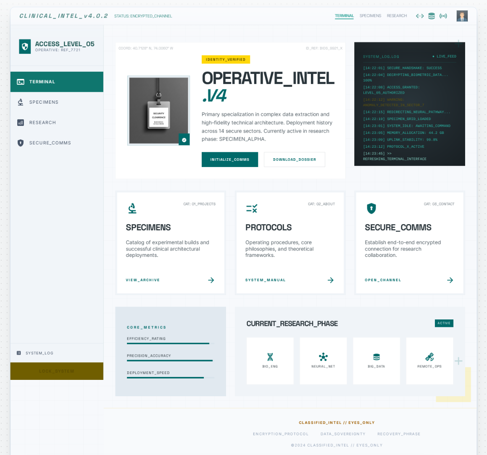
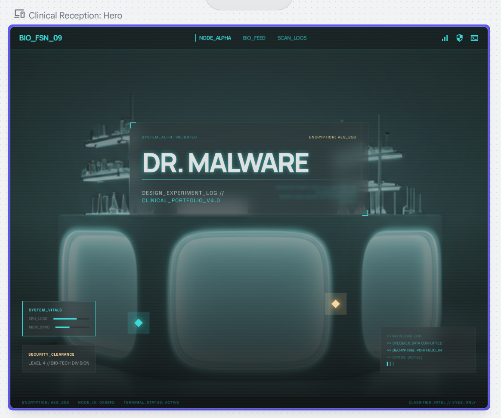
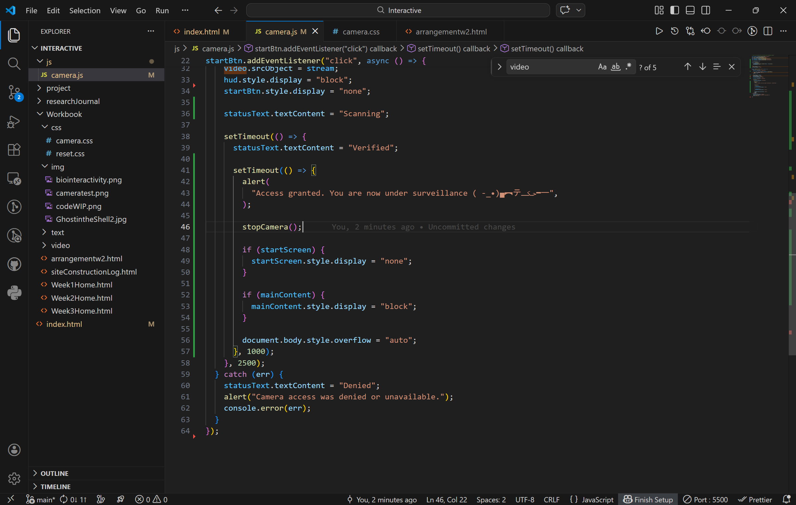
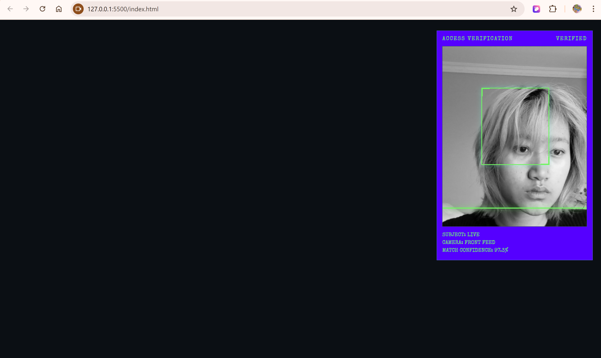
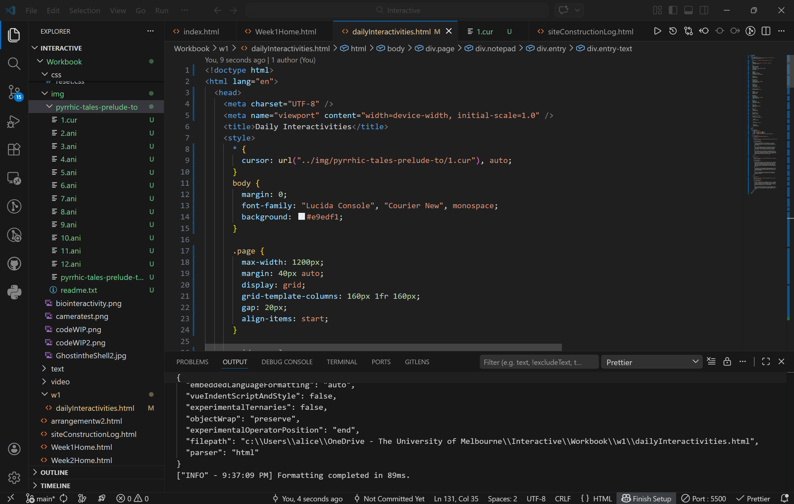

System Access Terminal
This log documents the development of my website, from early ideas and
layout planning to interface experiments, coding decisions, and final
refinements.
Stage 1 Initial Concept
Date: 10 March 2026
I began by brainstorming possible visual style I wanted with crazy 8s.

Crazy 8s 1-4

Crazy 8s 5-8
- Plate / Meal → users “consume” content like a curated dish.
- Folder Stack → Interaction as filing and retrieval.
- Desk / Setup → A workspace.
- Brain
- Plants
- System UI
- Scrapbook
- Fruit bowl
Stage 2 Layout and Structure
Date: 14 March 2026
I planned the structure of the website and experimented with layout
options. At this stage, I focused on navigation, and did some inform
user testing during class by letting others simulate and make
assumptions about how they would navigate the site.
I didn't manage to flesh out all the bits I wanted to explore, and my
design pivoted from a scrapbook-like feel to a more cyber-inspired look.

Homepage wireframe, medical reception desk with a sterile look &
feel

Detail page sketch
An attempt with Google Stitch
Date: 14 March 2026
Tried experimenting with stitch to vibe code the website - but honestly
not too satisfied with the output. I need to look into prompt
engineering to manipulate it better.

Stich Work in Progress

Initial Output

Output after 3 iterations of adjustments
Stage 3 Development and Testing
Date: 20 March 2026
I started coding the website in HTML, CSS, and JavaScript. I tested
interactive features, adjusted styling, and refined the interface to
better match the intended experience.

Coding progress screenshot

Adding alert dialog & entry into main webpage content

Early test version

Adding custom cursor to subpages